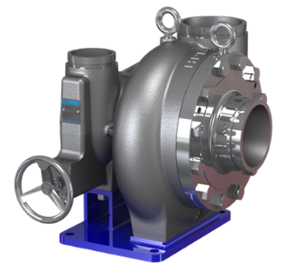

BRINE CONCENTRATION
濃鹽水減量與後段濃縮銜接
濃鹽水管理｜高壓膜濃縮與能量回收
在後段處理之前，評估濃水還能回收多少水。
面對濃鹽水減量需求，可評估以高壓膜濃縮回收部分水量，再銜接後段濃縮或資源回收程序。FEDCO 在此類配置中提供泵浦與能量回收設備的選型討論；應一併評估鹽類組成、結垢風險及後段處理條件。

01確認濃水組成
核對鹽類與結垢條件
02評估膜濃縮
配置高壓與能量回收
03銜接後段處理
確認濃縮液接收條件
從這些需求開始討論
- 既有 RO 濃水，評估進一步回收水量與減少液量。
- 規劃後段濃縮，先核對高壓膜程序與設備的適用條件。
此頁介紹膜濃縮與能量回收的評估方向；整體零液體排放或鹽品回收的工程範圍需另行確認。
可洽詢的設備系列
可洽詢 HPB 系列 Ultra 型式的適用性。工作壓力、材質與可回收能量須依濃水條件確認，其他泵浦依操作點另行選型。